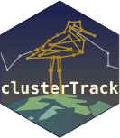

Package index
-
cluster_track() - Cluster a movement track into spatiotemporal clusters
-
aggregate_ctdf() - Aggregate (merge) adjacent clusters by spatial proximity
-
summary(<ctdf>) - Summarise a ctdf by cluster
-
as_ctdf() - Coerce an object to clusterTrack data format
-
as_ctdf(<data.frame>) - Coerce an object to clusterTrack data format
-
as_ctdf(<sf>) - Coerce an sf object to clusterTrack data format
-
as_ctdf_track() - Convert a
ctdftrack to movement step segments as LINESTRINGs
-
slice_ctdf() - Slice a CTDF into putative clusters using temporal continuity and spatial clustering
-
spatial_repair() - Repair spatially overlapping adjacent putative clusters
-
local_cluster_ctdf() - Local clustering using DTSCAN
-
temporal_repair() - Repair temporally overlapping putative clusters
-
sf_dtscan() - DTSCAN: Delaunay Triangulation-Based Spatial Clustering.
-
tdbscan() - tdbscan
-
ctdf_lof() - Compute cluster-wise local outlier factor scores with
dbscan::lof() -
ctdf_elongation() - Summarise geometric elongation of clusters
-
putative_cluster_trace() - Extract putative-cluster trace
-
lbdo66862 - ARGOS satellite tracking data for an individual Long-billed dowitcher
-
mini_ruff - Reduced ARGOS satellite tracking data for an individual Ruff
-
pesa56511 - ARGOS satellite tracking data for an individual Pectoral Sandpiper
-
ruff143789 - ARGOS satellite tracking data for an individual Ruff
-
nola125a - GNSS tracking data for an individual northern lapwing.
-
ruff07b5 - GNSS tracking data for an individual ruff.